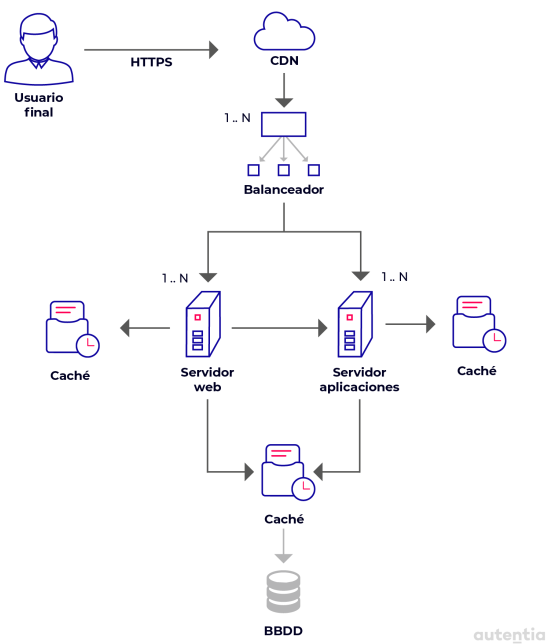

Este documento forma parte de las guías de onboarding de Autentia. Si te apasiona el desarrollo de software de calidad ayúdanos a difundirlas y anímate a unirte al equipo. Este es un documento vivo y puedes encontrar la última versión, así como el resto de guías completas, en nuestra web https://www.autentia.com/libros/
Esta obra está licenciada bajo la licencia Creative Commons Attribution ShareAlike 4.0 International (CC BY-SA 4.0)
Si alguna vez, estando con amigos o familiares preguntan a qué me dedico exactamente, suelo contestar que mi trabajo consiste en colaborar en la construcción de la parte de las aplicaciones que hace que salgas en los periódicos únicamente cuando lo haces mal. Eso es el Backend, eso que no se ve pero que todo el mundo da por supuesto: se da por supuesto que los datos se intercambian de manera segura, que no se pierden o corrompen y que son vistos o modificados únicamente por los que tienen el permiso para hacerlo; se da por supuesto que el sistema debe responder
con celeridad y que siempre está
disponible; se da por supuesto
que la información se intercambia
entre distintos sistemas con
fiabilidad y registrando en todo
momento qué, quién y cuándo se
accedió a esa información, etc. En
definitiva, se da por supuesto que funciona.
“El Backend es
la parte de las
aplicaciones que
el usuario percibe
únicamente cuando
NO funciona”
Quizás por su posición de elemento básico o por su naturaleza invisible al usuario, se ha extendido la percepción de ser un trabajo poco creativo, falto de imaginación o mucho peor: que para esto vale cualquiera, frase que no es tan rara de escuchar. Y esta estrecha y limitada visión produce sistemas frágiles y poco fiables, aplicaciones inconsistentes e inseguras abandonadas en manos de desarrolladores con poca experiencia y cuya única motivación es sobrevivir un día más, manteniendo una aplicación de la que hace tiempo perdieron el control, dirigidos por profesionales obsoletos porque hace tiempo que abandonaron las trincheras y son ya incapaces de ayudarles. Y sin embargo, éste es un campo que sí necesita creatividad, una que nace del análisis de los datos y de un conocimiento profundo del amplísimo ecosistema en el que se desenvuelven las aplicaciones, capacidad que surge del trabajo, de la mejora y el aprendizaje contínuo, de la experiencia y del compromiso, del trabajo en equipo y de la enseñanza e inspiración que algunos profesionales puedan ejercer sobre aquellos que comienzan en este apasionante mundo del Backend.
Haz un buen estudio de mercado, encuentra patrocinadores, diseña tu producto acorde a tus usuarios objetivo. Haz una espectacular interfaz de usuario que permita conquistar el mundo en un solo click. Construye una aplicación Web que sea fidelísima al diseño entregado y que además, sea responsive, adaptable y accesible. Despliega en la nube, con una arquitectura autoescalable y todos los extras que te ofrece tu plataforma favorita. Pero ten por seguro, que si la parte sobre la que se fundamenta todo el sistema no funciona, nada de lo que has hecho servirá.
| Escritorio | Web | |
| Ventajas |
|
|
| Desventajas |
|
|
Son las aplicaciones más tradicionales que podemos instalar en nuestro equipo. Las aplicaciones móviles también pertenecen a este grupo, aunque su planteamiento dista de aquellas que se desarrollaban en décadas pasadas.
Este tipo de aplicaciones se caracteriza por tener, en mayor o menor grado, una buena parte del procesamiento de los datos en el propio dispositivo. Por tanto, tienen también un lado back instalado. La interfaz puede generarse de muchas formas. Pueden usar componentes del sistema operativo, interfaces web, renderizar componentes propios, etc. Actualmente, muchas de estas aplicaciones también consumen datos desde servicios remotos. Algunas de ellas podrían llegar a considerarse una mera interfaz nativa para estos servicios.
Son la piedra angular de internet. Se encargan de gestionar las peticiones de millones de clientes a lo largo de todo el mundo. Mantienen la coherencia y la seguridad de los datos. Intercambian información con otras aplicaciones para ofrecernos servicios de interés.
En un inicio, se basaban en una arquitectura cliente-servidor que contenía todo lo necesario para funcionar, incluida una interfaz web para acceder y manipular la información. Esta visión ha evolucionado hacia aplicaciones que se distribuyen a lo largo de varios servidores o instancias en la nube, y se enfocan a actuar como back para atender peticiones de múltiples clientes a través de servicios SOAP o REST. Incluso, en muchas ocasiones, encontramos que esta relación se establece entre varias aplicaciones web, donde una no puede funcionar sin acceso a las otras.
